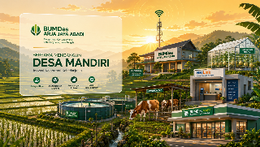
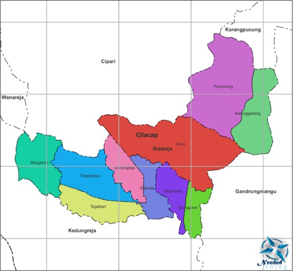

Desa Tinggarjaya, Kec. Sidareja, Kab. Cilacap
"Membangun Ekonomi Desa, Mensejahterakan Warga"
7+
Unit Usaha Aktif
2018
Tahun Berdiri
10.448
Jiwa Penduduk
3.019
Kepala Keluarga
Tentang Kami
Dasar Hukum Pendirian
Perdes No. 02 Tahun 2018
Desa Tinggarjaya, Kecamatan Sidareja, Kabupaten Cilacap
Menjadi pendorong tumbuhnya usaha ekonomi dan kesejahteraan masyarakat Desa Tinggarjaya yang berkelanjutan dengan menjadikan Desa Tinggarjaya sebagai sentral perdagangan, jasa, pertanian dan industri kerakyatan yang kuat menuju masyarakat sejahtera, cerdas, sehat, dan terampil melalui pengembangan usaha ekonomi, peningkatan kapasitas dan kompetensi sumberdaya dan kelembagaan.
Gambaran Umum
Desa Tinggarjaya memiliki potensi ekonomi yang kuat pada sektor perdagangan, pertanian, UMKM, dan industri rumah tangga.

Desa Tinggarjaya, Kec. Sidareja, Kab. Cilacap, Jawa Tengah
Desa Tinggarjaya merupakan salah satu desa di Kecamatan Sidareja, Kabupaten Cilacap, Provinsi Jawa Tengah dengan potensi kuat pada sektor perdagangan, usaha mikro, pertanian, serta industri rumah tangga.
Secara geografis, posisi strategis tidak jauh dari pusat Kecamatan Sidareja memberikan peluang besar bagi pengembangan usaha masyarakat dan aktivitas perdagangan desa.
Keberadaan BUMDes diharapkan menjadi penggerak utama pemasaran produk lokal sekaligus mendukung peningkatan Pendapatan Asli Desa (PADes) melalui BUMDes Mart dan unit usaha produktif lainnya.
10.448
Jiwa Penduduk
3.019
Kepala Keluarga
5.12 km²
Luas Wilayah
UMKM+
Pelaku Usaha Lokal
Mayoritas warga bermatapencaharian di bidang pertanian. Lahan yang subur jadi tulang punggung ketahanan pangan lokal.
Aktivitas perdagangan tinggi didukung posisi strategis dekat pusat kecamatan. Pelaku UMKM terus berkembang.
Beragam produk rumahan menjadi potensi unggulan. BUMDes hadir sebagai jembatan antara produsen lokal dan pasar.
Budidaya ikan air tawar sistem bioflok memaksimalkan hasil panen dan pendapatan warga desa.
Sektor peternakan sapi dikelola profesional oleh BUMDes untuk mendukung kebutuhan protein hewani masyarakat.
Dengan penduduk besar dan ekonomi dinamis, Desa Tinggarjaya menawarkan peluang investasi yang menjanjikan.
Diskusi SekarangStruktur Organisasi
Pengurus BUMDes Arja Jaya Abadi yang berkomitmen memajukan ekonomi Desa Tinggarjaya.
Penasihat
SUWARNI
Kepala Desa
Pengawas
TOHA AL MAKTUB
Direktur
MUHAMAD HANIF
Sekretaris
CATUR RIYADI
Bendahara
ZIKRI RIZKIAN
Manager Unit Usaha
Manager
IMDAD DURROHIM
Usaha Wifi
Manager
SRI SUYANTI
Pasar Desa
Manager
RIYANTO
Peternakan Sapi
Manager
RAHMAT
Budidaya Ikan Tawar
Manager
LALA
Usaha BRI Link
Manager
FIKRI
Green House Melon
Manager
ALAM NUR KHOLIK
Usaha Pertanian
Layanan Kami
Berbagai unit usaha yang dikelola BUMDes untuk mendorong perekonomian warga Desa Tinggarjaya.
Layanan internet cepat dan terjangkau untuk seluruh warga desa.
AktifBudidaya ikan nila modern menggunakan sistem bioflok yang efisien.
AktifLayanan transaksi keuangan dan perbankan yang mudah dijangkau warga.
AktifPengelolaan lahan pertanian desa secara produktif dan berkelanjutan.
AktifBudidaya melon premium dengan teknologi green house modern.
AktifPemeliharaan sapi unggul untuk meningkatkan pendapatan warga desa.
AktifToko kebutuhan pokok warga dengan harga terjangkau dan stok terjamin.
AktifAkuntabilitas Publik
BUMDes Arja Jaya Abadi berkomitmen pada prinsip keterbukaan dan akuntabilitas dalam pengelolaan keuangan desa.
Dokumentasi
Klik kategori untuk melihat seluruh dokumentasi kegiatan dan unit usaha BUMDes Arja Jaya Abadi.
Partisipasi Warga
Pendapat dan masukan Anda sangat berarti bagi kemajuan BUMDes Arja Jaya Abadi. Ulasan akan dikirim langsung via WhatsApp.
Hubungi Kami
Alamat Kantor
Jl. Ahmad Yani No. 278, Tinggarjaya
Sidareja, Kab. Cilacap, Jawa Tengah
Jam Operasional
Setiap Hari • 08.00 – 16.00 WIB
Kirim Pesan Langsung
Chat via WhatsApp Sekarang